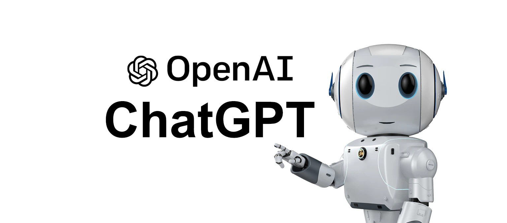

8 Von Schufterei und Mühsal: Arbeiten in Deutschland
| Themen | Wirtschaftszweige, am Arbeitsplatz |
| Lernziele | Sie kennen wichtige Wirtschaftszweige in Deutschland. Sie können die Arbeitskultur in Deutschland und China vergleichen. Sie können über die Zukunft der Arbeit diskutieren. |
Beraten Sie in kleinen Gruppen und notieren Sie dann so viele Berufe wie möglich innerhalb von drei Minuten. Sammeln Sie Ihre Antworten im Plenum. Wer hat am meisten Berufe gefunden?
Hören Sie folgende Straßenumfragen zum Thema Berufe und Berufswünsche. Welche Berufe werden erwähnt? Was ist besonders toll an diesen Berufen? (Video mit Transkript)
Berufe gehören zu verschiedenen Wirtschaftszweigen oder Branchen. Ordnen Sie die Berufe aus Aufgabe 1 den folgenden Wirtschaftszweigen zu. Ergänzen Sie Wirtschaftszweige, wenn nötig. Arbeiten Sie in der Gruppe.
| Wirtschaftszweig | Berufe |
|---|---|
| Landwirtschaft | Landwirt, Gärtner, … |
| Industrie | Mechaniker, Elektriker, … |
| Baugewerbe | Straßenbauer, Anlagenmechaniker, … |
| Handel/Verkehr/Gastgewerbe | Kellner, Buchhändler, … |
| Information/Kommunikation | Fachinformatiker, … |
| Finanzen | … |
| Wohnungswesen | Immobilienmakler, Verwalter, … |
| Unternehmensdienstleistungen | Gebäudereiniger, Berater, … |
| Öffentliches | … |
Bringen Sie dann die Wirtschaftszweige in eine Rangfolge von groß nach klein (Anzahl der Erwerbstätigen in diesem Wirtschaftzszweig).
Vergleichen Sie Ihr Ergebnis mit den Daten des Statistischen Bundesamtes. Haben Sie richtig geschätzt?
Grafik
Diskutieren Sie in der Gruppe Ihre Berufswünsche. Welchen Beruf möchten Sie ergreifen? Wieso? Was ist Ihnen wichtig bei der Arbeit (z.B. hohes Gehalt, gute Arbeitsatmosphäre, viele Aufstiegsmöglichkeiten, nah zur Familie, usw.). Notieren Sie einige Stichpunkte für später.
Nach dem Studium möchte ich als … arbeiten, weil …
Ich will später vielleicht in der …-Branche arbeiten. Ich denke, in dieser Branche ist …
Mir ist im Beruf wichtig, dass …
Ich finde … nicht so wichtig, aber …
Pause
Bearbeiten Sie das Arbeitsblatt zum Thema Arbeit in Einzelarbeit. Teilen Sie Ihre Ergebnisse mit der Klasse.
Vergleichen Sie die Ergebnisse Ihrer Gruppendiskussion aus Aufgabe 3 mit dem Arbeitsblatt aus Aufgabe 4. Was ist Ihnen, was ist den Deutschen bei der Arbeit wichtig? Welche Gemeinsamkeiten, welche Unterschiede bemerken Sie?
Ein wichtiger Unterschied besteht zwischen …
Was … betrifft, …
Ganz ähnliche Ansichten haben wir beim Thema … .
Genau wie wir / Ganz anders als wir finden viele Deutsche, dass …
In den vergangenen Monaten sind ChatGPT und andere Künstliche Intelligenzen in aller Munde.
ChatGPT ist ein Textroboter der Firma OpenAI. Die Firma hat ihren Sitz in den USA und beschäftigt sich mit der Forschung von Künstlicher Intelligenz. Der KI-Chatbot ChatGPT kann kurze Aufsätze schreiben oder auch Mathematikaufgaben lösen. (srf.ch, 10.04.2023)

Diskutieren Sie in der Gruppe, wie sich Künstliche Intelligenzen wie ChatGPT auf die Arbeitswelt und die Arbeit der Zukunft auswirken könnte. Hier einige Leitfragen für Ihre Diskussion:
- Welche Berufe werden durch ChatGPT wahrscheinlich ersetzt werden?
- Welche neuen Berufe könnten entstehen?
- Welche Auswirkungen könnte ChatGPT auf Arbeitsbedingungen haben?
- Welche Wünsche / Hoffnungen / Ängste / Forderungen haben z.B. Arbeitnehmer, Arbeitgeber oder der Staat?
Ganz sicher / vermutlich / wahrscheinlich / möglicherweise wird …
Ich vermute, dass …
Ich bin mir sicher, dass …
Einerseits … Andererseits …
Eine Folge / Auswirkung könnte sein, dass …
Ich befürchte, dass …
Denken Sie noch einmal an die heutige Stunde. Was was unerwartet und überraschend für Sie? Formulieren Sie einen Satz.